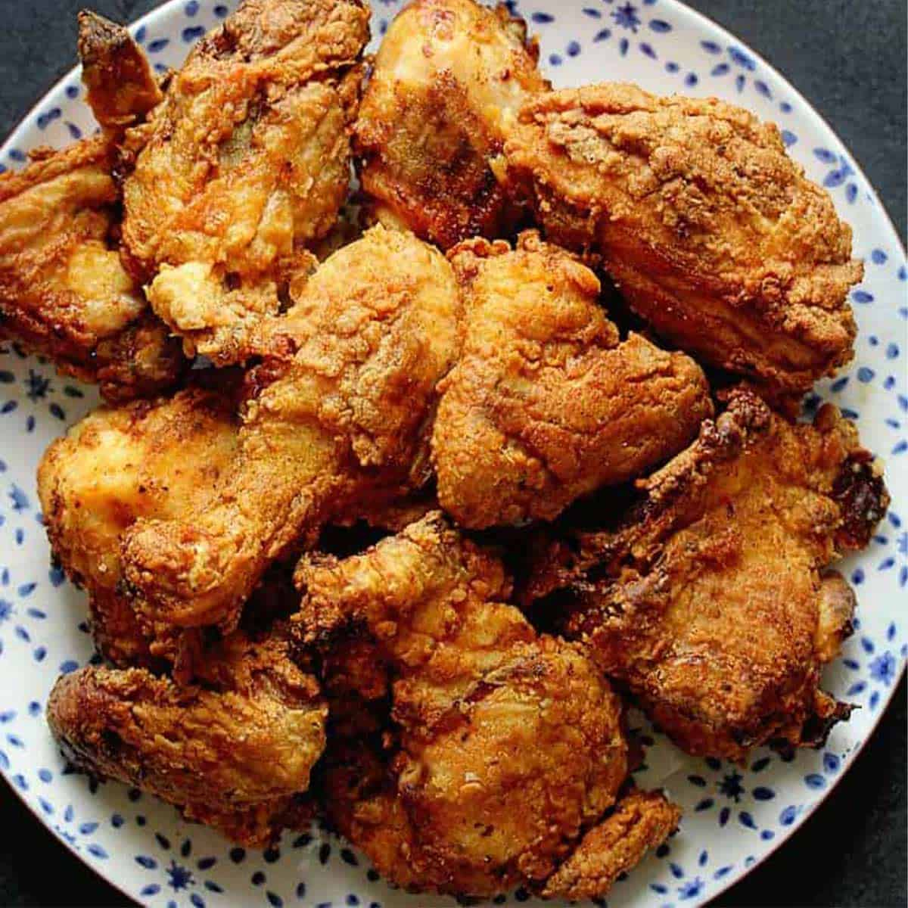

Fried Chicken

Description
I experimented with lots of recipes over the years to find the best crispy fried chicken.
This is it! It's bits and pieces of hints I have heard over the years.
It's more a matter of preparation and cooking method!
Ingredients
- 300gr of chickenfilet
- 50gr of flour
- 2 tsb gochujang
- 2 eggs
- 1tbs Soysauce
- 300ml neutral oil
- Panco
Instructions
- Flatten chicken with meathammer
- Marinade chicken in soysaus and gochujang
- Heat oil to 370F
- bask chicken in flour then eggs then panca
- Fry chicken in oil until golden brown
Home